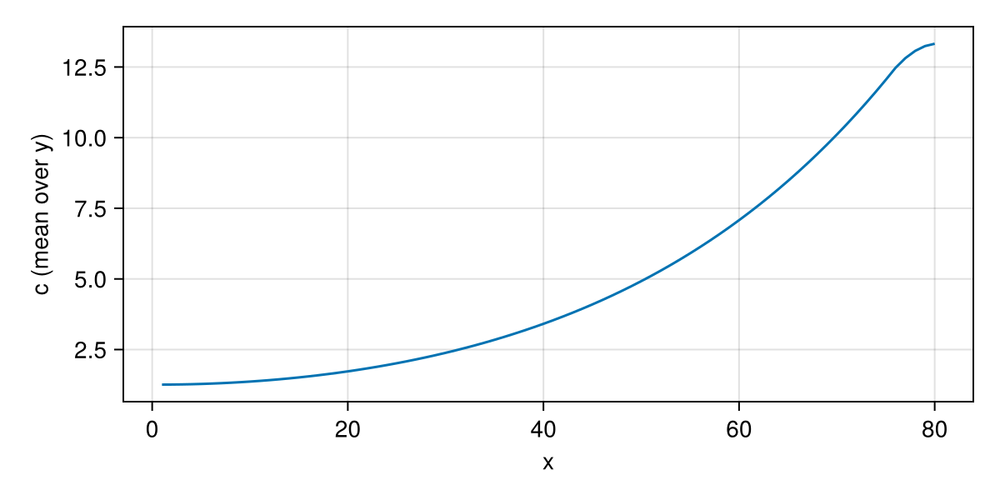
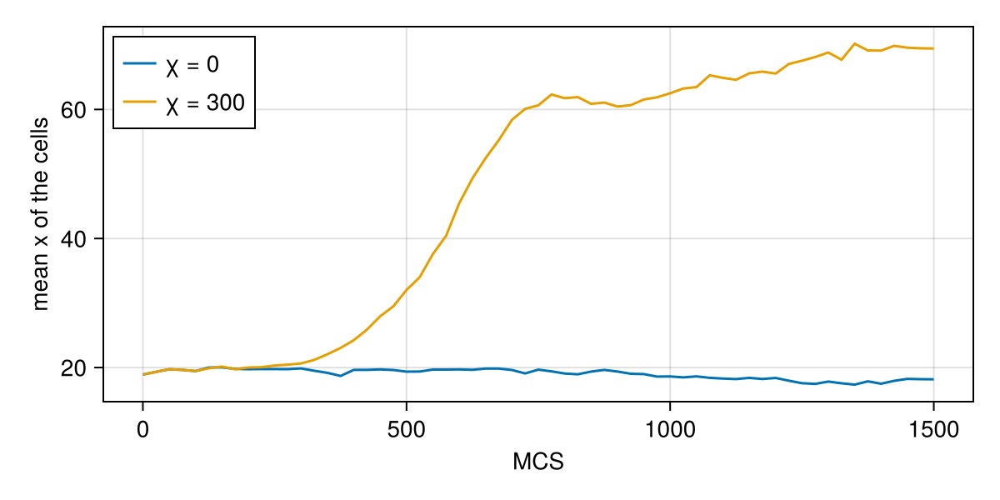

Tutorial 2: fields and chemotaxis
Cells sense and secrete chemicals. In Potts.jl a chemical is a field: a value at every lattice site that obeys a partial differential equation, written in ModelingToolkit syntax. You will learn:
- how to declare a field and its reaction–diffusion equation;
- how to choose the field solver of a problem;
- how chemotaxis biases copy attempts, with
Chemotaxisor a written-out@drive; - how to make cells secrete, and how to plot and record a field.
The models on this page are generic teaching models, not published ones.
using Potts, MakiePotts, CairoMakieA field with a source
The model below has one cell kind and a chemical c. The chemical is made in a strip at the right edge of the lattice, diffuses and decays. The lattice is closed in x and periodic in y:
\[\frac{\partial c}{\partial t} = D_c \nabla^2 c + s\,[x > 75] - k c\]
@potts_model Gradient begin
@kinds medium cell
@parameters begin
λ = 2.0
V₀ = 25.0
T = 8.0
J[kind, kind] = [0 10; 10 8]
Dc = 1.0 # diffusion coefficient
s = 0.1 # production rate in the source strip
k = 0.001 # decay rate
χ = 0.0 # chemotactic strength (off for now)
end
@variables c(field) = 0.0
@lattice Lattice((80, 40); boundary = (Closed(), Periodic()), neighborhood = Moore(1))
@energy begin
cells(cell) => λ * (volume - V₀)^2
contacts => J[kind, kind′]
end
@equations D(c) ~ Dc * Δ(c) + s * (position[1] > 75) - k * c
@drive Chemotaxis(c; strength = χ)
@sweep Metropolis(; temperature = T)
endNew pieces:
@variables c(field) = 0.0declares a field with initial value 0. The scope in parentheses says where the variable lives:field(a chemical on the lattice),site,cellormodel.@equationsholds differential equations.D(c)is the time derivative,Δ(c)the lattice Laplacian, andposition[1]the first coordinate of the site. A boolean such asposition[1] > 75counts as 1 or 0.@drive Chemotaxis(c; strength = χ)biases copies towards higherc(more below).
The problem must say how to integrate the field. ExplicitEuler(substeps = 8, lower = 0.0) takes 8 explicit Euler steps per MCS and clips negative values:
@named gradient = Gradient()
start = layout(Scattered(12, (5, 5); region = (8:30, 1:40), kinds = [:cell], seed = 1), gradient)
prob = PottsProblem(gradient, start, (0, 1500); field_solver = ExplicitEuler(substeps = 8, lower = 0.0), seed = 1)
sol = solve(prob, SequentialCPM(); saveat = 25)Scattered places 12 cells at random in the left part of the lattice. With χ = 0 the cells only diffuse. sol[:c] gives the field at every saved time, as a matrix:
c_end = sol[:c][end]
fig = Figure(size = (600, 300))
ax = Axis(fig[1, 1]; xlabel = "x", ylabel = "c (mean over y)")
lines!(ax, 1:80, vec(sum(c_end; dims = 2)) ./ 40)
fig
An explicit step is stable only if it is short enough for the diffusion coefficient and the reaction rate. ExplicitEuler() without substeps chooses the count itself, from the current parameters: the smallest n with $\frac{\Delta t}{n}\left(D \sum_d 4/h_d^2 + k\right) \le 1.8$, where $k$ bounds the reaction's $|\partial f/\partial c|$ (k for - k * c, also with an indicator such as (kind == medium)). The margin below the stability limit 2 damps grid-scale noise. A number, as here, is a minimum: the automatic count wins when it is larger. When the reaction is not linear in the field (- k * c^2), its rate is not counted and the problem warns; give substeps with room to spare. A field that blows up to huge positive and negative values is the sign of too few substeps.
Chemotaxis
Chemotaxis(c; strength = χ) adds to $\Delta H$ of a copy from site source into site target
\[\Delta H_\text{chem} = -\chi\,\big(c(\text{target}) - c(\text{source})\big)\]
when the gaining cell is a cell, so a cell that extends up the gradient lowers its energy. Switch it on with remake:
prob_chemo = remake(prob; p = [:χ => 300.0])
sol_chemo = solve(prob_chemo, SequentialCPM(); saveat = 25)
record_potts("chemotaxis_gradient.mp4", sol_chemo; framerate = 12, title = "", plot = (; boundaries = true), figure = (; size = (600, 330)))The cells crawl towards the source at the right. The mean x-coordinate of their sites shows it; sol[:position] is not needed, the saved states hold the cell numbers:
mean_x(u) = sum(x[1] for x in CartesianIndices(u.σ) if u.σ[x] != 0) / count(!=(0), u.σ)
fig = Figure(size = (600, 300))
ax = Axis(fig[1, 1]; xlabel = "MCS", ylabel = "mean x of the cells")
lines!(ax, sol.t, mean_x.(sol.u); label = "χ = 0")
lines!(ax, sol_chemo.t, mean_x.(sol_chemo.u); label = "χ = 300")
axislegend(ax; position = :lt)
fig
Writing the drive out
Chemotaxis is a one-liner for a @drive statement. A drive is a term added to $\Delta H$ of a copy attempt, written with the names of the copy: source and target (sites), new (the cell gaining the target) and old (the cell losing it). Printing the model shows what Chemotaxis(c; strength = χ) expands to:
gradientPottsSystem gradient on 80×40 (2D)
kinds: medium, cell
parameters: λ, V₀, T, J, Dc, s, k, χ
variables: c(field)
energy cells(1) => ((-V₀ + volume)^2)*λ
energy contacts => Potts.at2(J, kind, kind′)
drive copy => ifelse(new != 0, -(-Potts.at(c(t), source) + Potts.at(c(t), target))*χ, 0.0)
equation Differential(t, 1)(c(t)) ~ (75 < Potts.at(position, 1))*s + Dc*Potts.Δ(c(t)) - c(t)*k
sweep: metropolis(temperature = T)The printout is Potts's internal form of the model: Potts.at(c(t), target) is the field at the target site, and Potts.at2(J, kind, kind′) is the table entry. In the notation of @potts_model the drive line reads copy => ifelse(new != 0, -χ * (c[target] - c[source]), 0.0). Here is the same model with that line in place of Chemotaxis:
@potts_model GradientByHand begin
@kinds medium cell
@parameters begin
λ = 2.0
V₀ = 25.0
T = 8.0
J[kind, kind] = [0 10; 10 8]
Dc = 1.0
s = 0.1
k = 0.001
χ = 300.0
end
@variables c(field) = 0.0
@lattice Lattice((80, 40); boundary = (Closed(), Periodic()), neighborhood = Moore(1))
@energy begin
cells(cell) => λ * (volume - V₀)^2
contacts => J[kind, kind′]
end
@equations D(c) ~ Dc * Δ(c) + s * (position[1] > 75) - k * c
@drive copy => ifelse(new != 0, -χ * (c[target] - c[source]), 0.0)
@sweep Metropolis(; temperature = T)
end
@named by_hand = GradientByHand()
function short(sys)
start = layout(Scattered(12, (5, 5); region = (8:30, 1:40), kinds = [:cell], seed = 1), sys)
prob = PottsProblem(sys, start, (0, 100); field_solver = ExplicitEuler(substeps = 8, lower = 0.0), seed = 1)
return solve(remake(prob; p = [:χ => 300.0]), SequentialCPM())
end
short(by_hand).u[end].σ == short(gradient).u[end].σtrueWith the same seed both runs make the same copies, so the drive is the same. Written out, the rule is easy to change: for example kind[new] == leader would restrict it to one kind. Chemotaxis has keywords for the common variants: kinds = (leader,), when = old == 0 (extensions into the medium only) and response = saturating(s) ($c/(s + c)$, a receptor that saturates).
Cells that secrete
When the cells make the chemical themselves, chemotaxis pulls them together. The source term is now s * (kind == cell): every site owned by a cell produces c.
@potts_model Aggregation begin
@kinds medium cell
@parameters begin
λ = 2.0
V₀ = 25.0
T = 8.0
J[kind, kind] = [0 10; 10 8]
Dc = 1.0
s = 0.05
k = 0.005
χ = 1000.0
end
@variables c(field) = 0.0
@lattice Lattice((80, 80); boundary = Periodic(), neighborhood = Moore(1))
@energy begin
cells(cell) => λ * (volume - V₀)^2
contacts => J[kind, kind′]
end
@equations D(c) ~ Dc * Δ(c) + s * (kind == cell) - k * c
@drive Chemotaxis(c; strength = χ)
@sweep Metropolis(; temperature = T)
end
@named aggregation = Aggregation()
start = layout(Scattered(60, (5, 5); kinds = [:cell], seed = 1, gap = 2), aggregation)
prob = PottsProblem(aggregation, start, (0, 2000); field_solver = ExplicitEuler(substeps = 8, lower = 0.0), seed = 1)
sol = solve(prob, SequentialCPM(); saveat = 30)To show the field, attach it to each frame as a channel and colour the frame by that channel. boundaries = true draws the cell outlines on top:
key = SiteChannelKey(:c, Float64)
frames = [renderframe(u; mcs = t, channels = (RenderChannel(key, u.site.c; label = "c"),))
for (u, t) in zip(sol.u, sol.t)]
record_potts("chemotaxis_aggregation.mp4", frames; framerate = 12, encoding = ChannelEncoding(key),
plot = (; boundaries = true), title = "", figure = (; size = (420, 420)))Cells that happen to be close raise the chemical between them and pull each other into clusters, and the clusters grow by collecting more cells.
Advanced: kind-dependent coefficients and several fields
Any expression of the site is allowed on the right-hand side: (kind == cell) selects sites by owner kind, a kind-indexed parameter δ[kind] gives each kind its own decay, and several fields can be declared and coupled in one @equations block. Each field needs the problem's field_solver, or an entry of solvers = [c => ExplicitEuler(...)] to give it its own scheme. See Equations and solvers.
What you learned
c(field)declares a chemical field;@equations D(c) ~ …gives its PDE withΔ.PottsProblem(…; field_solver = ExplicitEuler(substeps = n, lower = 0.0))integrates it.Chemotaxis(c; strength)or@drive copy => …biases copies along the field.- Fields can be recorded as videos through render-frame channels.
See also: the published vasculogenesis model MerksVasculogenesis, in which endothelial cells secrete a chemoattractant and form networks.
Next, Tutorial 3 makes cells grow, divide and die.